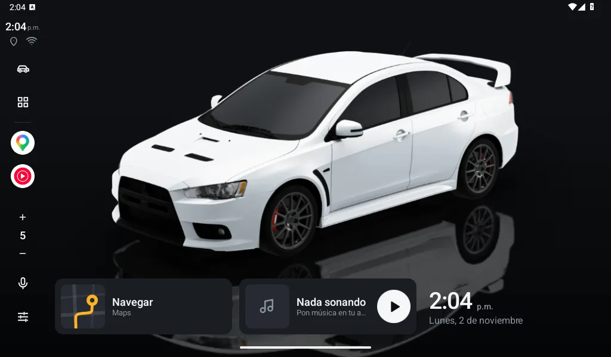
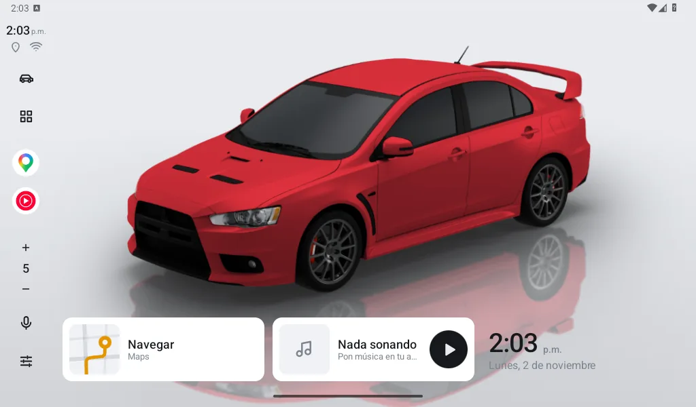
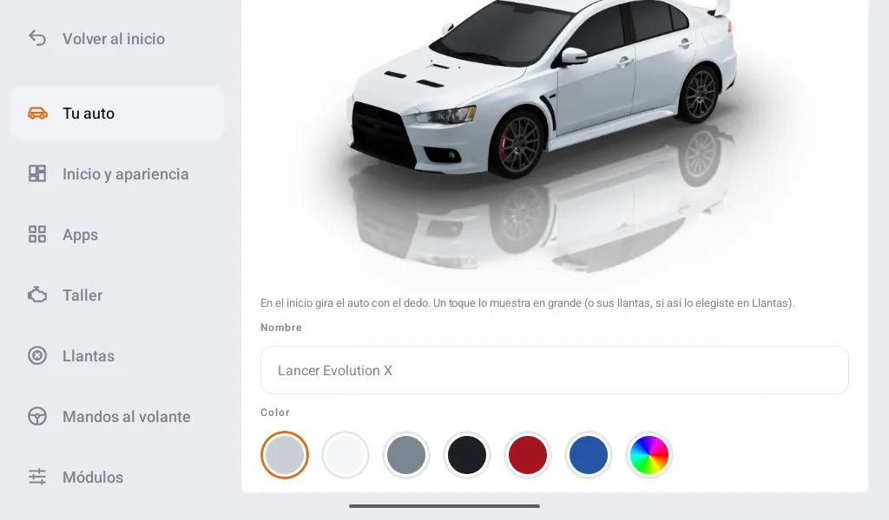
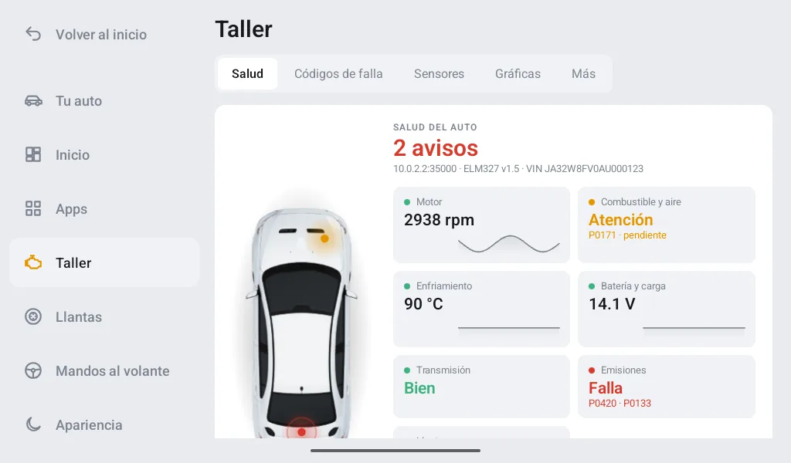
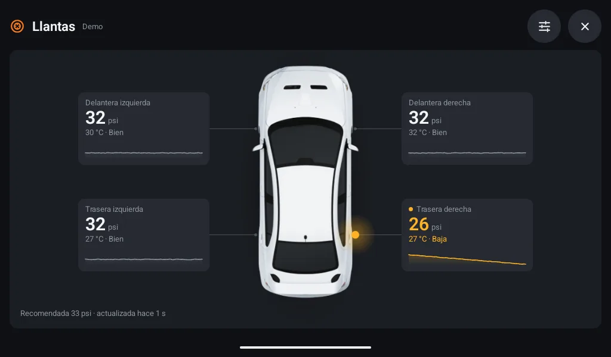
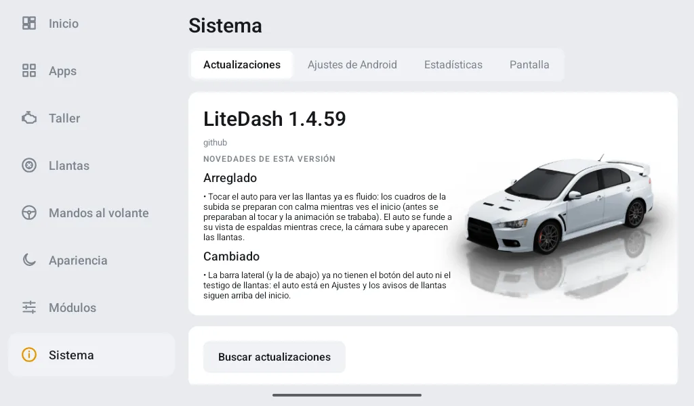

Tu auto, en limpio.
El launcher para pantallas Android de autos y motos que pesa 1.7 MB, abre en menos de un segundo y no gasta nada cuando no lo usas.
Sin anuncios, sin cuentas y sin rastreo. Código abierto.

Rápido de verdad.
Las pantallas de autos y motos suelen tener poca memoria y procesadores lentos. LiteDash está hecho para ellas: arranca al instante y, cuando no lo tocas, no hace nada.
Lo que pesa
Se baja en segundos, hasta con los datos del celular.
En abrir
Desde cero hasta tu inicio listo, y ya viene precompilado para pantallas lentas.
De memoria
Con tu auto 3D en el inicio. Cabe sobrado en pantallas de 1 y 2 GB de RAM.
De CPU en reposo
Nada corre en segundo plano ni revisa cosas cada segundo.
Medido con LiteDash 1.4.71 en un emulador de pantalla de 7" (mediana de 10 arranques) y en uno de Android 6 con 1 GB de RAM. Cada versión se vuelve a medir antes de salir.
Hasta 17 veces más ligero.
Menos espacio, menos memoria y menos espera. Así se compara con otros launchers de auto conocidos:
Tamaños de descarga publicados en RuStore, octubre de 2026. Pueden variar por versión.
Tu auto es el fondo.
Tu auto aparece parado sobre el piso, con su sombra y un reflejo tenue que pasan por debajo de las tarjetas. Como en los autos de lujo, pero en tu pantalla.
- Trece modelos en el catálogo (autos y una moto), con sus emblemas. Bájalo solo si lo quieres.
- Cualquier color: tono, intensidad y brillo, en vivo.
- Gíralo 360° con el dedo; se queda donde lo dejas. Un toque lo ve en grande.
- Tres piezas que puedes juntar: el auto 3D, tu auto en carretera con la velocidad y los km del viaje, y una imagen tuya (como tu logo).
- ¿No quieres ver un auto? Plantillas de solo velocímetro o tu foto de fondo con tarjetas, estilo BYD.

Pinta tu auto como el tuyo.
Seis colores rápidos y un selector libre para cualquier tono. La app no carga con los autos: se bajan del catálogo (unos 2 MB cada uno) y los quitas con un toque cuando quieras.
- Vista previa de cada auto antes de bajarlo.
- Calidad del giro Baja o Alta: más fluidez baja solo los cuadros que faltan.
- Siempre puedes volver al sedán dibujado, que no pesa nada.

El Taller: tu escáner OBD.
Conecta un adaptador ELM327 al puerto OBD (abajo del volante) y LiteDash habla con el motor. Por Bluetooth, Bluetooth LE, Wi-Fi o cable USB, sin instalar otra app.
- Salud del auto: tu auto visto desde arriba con un punto en la parte que pide atención, y una tarjeta por sistema: motor, combustible y aire, enfriamiento, batería, transmisión y emisiones.
- Códigos de falla en tarjetas, explicados en palabras de todos los días, y borrarlos con doble confirmación.
- ¿Pasas la verificación? La luz de falla y los monitores que revisan en el centro.
- Sensores y gráficas en vivo, cronómetro de 0 a 100 y registro de viajes.
- Medidores en tu inicio: tacómetro, temperatura del motor y del aceite, gasolina, batería, consumo en km/l, turbo, acelerador y gasto de gasolina.
- Alertas si el motor se calienta de más o la batería no carga, y velocímetro por OBD o GPS.

Tus llantas, a la vista.
LiteDash lee la presión y la temperatura de tus llantas sin la app del fabricante. Funciona con los kits con receptor USB que se venden para pantallas Android (los genéricos de 433 MHz) y con las familias más comunes de sensores Bluetooth.
- Toca tu auto 3D: gira, la cámara sube y lo ves desde arriba con sus cuatro llantas.
- Presión, temperatura y estado de cada una; toca una y ves sus últimas 24 horas.
- Empareja, identifica o intercambia sensores, y rota las llantas con un toque.
- Avisos de presión baja, fuga, temperatura alta, pila del sensor y sensor sin señal.
- La presión en las esquinas de tu auto en el inicio, o el widget Llantas en tres tamaños.

Modular: todo viene apagado.
Recién instalado, LiteDash es lo mínimo. Cada módulo tiene su interruptor y se enciende cuando tú quieres; lo apagado desaparece y no gasta nada: ni memoria, ni batería, ni permisos. Todo dentro de la misma app, sin instalar nada más.
Tu inicio, a tu manera
Mueve, agranda o quita widgets, con o sin tarjeta, sobre tu propia foto de fondo. Plantillas con auto, carretera, velocímetro o fondo, para pantallas de 7", 10" y 11" o más.
Velocímetros a tu gusto
Arco, aguja, digital, anillo o barra deportiva; del color que quieras (o dinámico de verde a rojo), hasta 320 km/h, con números y zona roja.
Música
Como en un estéreo: su propio reproductor para tu memoria USB (carpetas, artistas y álbumes), los controles de la música por Bluetooth y tu app de música (Spotify, YouTube Music…) como botón, sin salir del inicio.
Radio
Un widget aparte para la radio FM de tu pantalla y, si la activas, radio por internet con las estaciones cerca de ti.
Navegar
Waze o Google Maps a un toque, Casa y Trabajo en la tarjeta y la siguiente vuelta sin abrir el mapa.
Mandos al volante
Aprende cada botón de tu volante y elige qué hace: música, volumen, mapa, voz o inicio.
Día y noche
Tema y brillo según la hora del sol, el sensor de luz o los faros del auto, que LiteDash aprende de tu pantalla.
Clima y Viaje
La temperatura y 3 días de pronóstico; velocidad, rumbo, distancia y tiempo por GPS, solo mientras lo ves.
Recordatorios del auto
Servicio, verificación, tenencia, seguro y placas, con aviso días antes.
Android Auto y CarPlay
Tu app de proyección (Zlink, AutoKit…) a un toque desde el dock o una pieza.
Estacionado
Tras unos minutos sin tocar la pantalla, un reloj grande y discreto que no deslumbra de noche, o tu propia imagen.
Pantalla dividida
Abre el mapa o la música en una mitad y tu auto en la otra (Android 12L o más nuevo).
Unidades a tu gusto
km/h o mph, °C o °F, y psi, bar o kPa.
Llantas (TPMS)
Presión y temperatura de cada llanta sobre tu auto, leídas de sensores USB o Bluetooth, con avisos.
Actualizaciones con un toque.
Nada de buscar el APK nuevo en internet ni pasarlo por USB a la pantalla. En Ajustes → Sistema → Actualizaciones, toca "Buscar actualizaciones" y listo.
Busca
LiteDash revisa si hay una versión nueva en GitHub.
Verifica
La baja y revisa que llegó completa y sin cambios (SHA-256).
Instala
Android te pide confirmar, y tu acomodo se queda tal cual.

Lo que nos hace diferentes.
LiteDash nació en un auto real, con una pantalla real, y se hace pensando en quien maneja.
Ligero por regla
Cada versión se mide antes de salir. Si algo pesa de más, no entra: por eso el mapa interno se quitó.
Hecho para manejar
Botones grandes, sin ventanitas que estorben y con el inicio siempre a un toque.
Tuyo de verdad
Sin anuncios, sin cuentas y sin rastreo. Solo usa internet para lo que tú pides (bajar un auto, el clima, la radio o buscar actualizaciones) y un conteo anónimo al día que apagas con un toque.
Código abierto
Licencia GPL-3.0. Puedes revisar el código, reportar problemas o proponer mejoras en GitHub.
Pruébalo hoy.
Descarga el APK, instálalo en tu pantalla y elige LiteDash como pantalla de inicio. Pronto también en Google Play.
Android 6.0 o más nuevo · pantallas de autos y motos de 6" a 11" o más, tablets y teléfonos · —·· es la D de Dash en código Morse
LiteDash es gratis y sin anuncios. Si te sirve, invítame un café.
Apoyar en Ko-fi